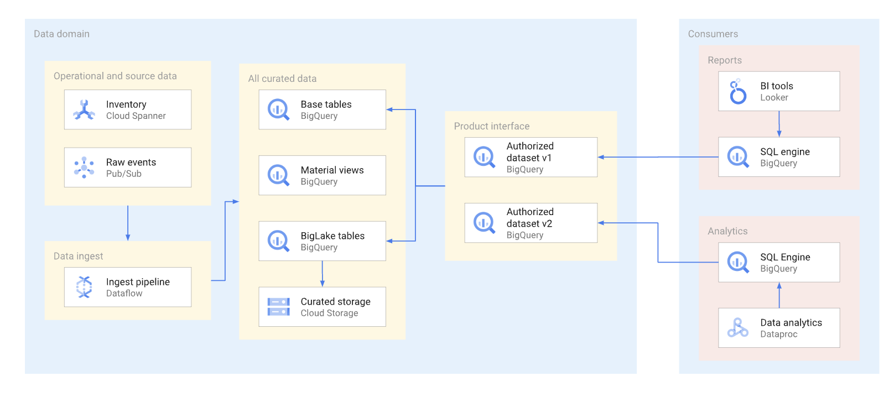
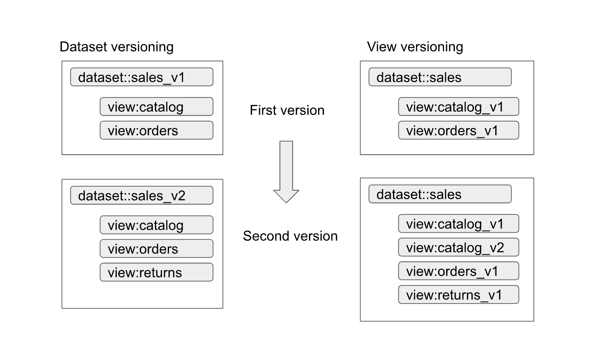
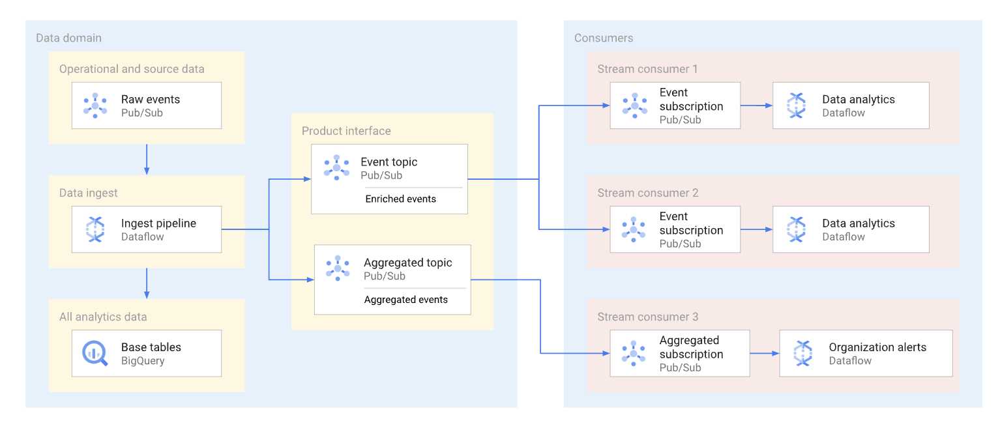
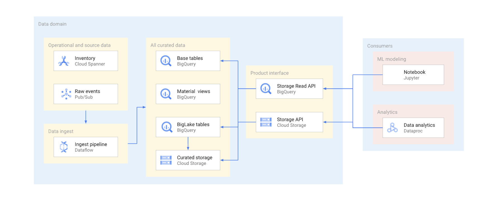

Content Outline
- 1 Definition and Components of a Data Product
- 2 Designing Data Product Boundaries
- 3 The "Product Interface" Concept
- 4 Consumption Interfaces on Google Cloud
- 4.1 BigQuery Authorized Datasets and Views
- 5 Data Product Lifecycle and Versioning
- 5.1 Versioning Strategies: Dataset vs. View
- 6 Filtering and Security Approaches
- 7 Common Use Cases and Patterns
1 Definition and Components of a Data Product
A data product is the fundamental unit of value in a Data Mesh. It is built on top of a datastore (such as a domain data warehouse or lake) and consists of three integrated components:
- Code: Includes ingestion and enrichment pipelines, as well as the implementation of consumption interfaces (SQL views, Cloud Run APIs, or LookML models).
- Metadata: Encompasses technical schemas, business documentation (SLA/SLO), and discovery tags in Dataplex that explain how the data should be used.
- Infrastructure: Leverages the separation of storage and compute. Producers manage the storage, while consumers use their own compute resources to query the data via interfaces.
2 Designing Data Product Boundaries
The design process starts by defining how consumers will use the data. Boundaries should align with business capabilities. A product should be large enough to provide business value but small enough to be managed by a single domain team. Producers are encouraged to offer multiple interface types (SQL, Streaming, APIs) based on the specific needs of their "customers."
3 The "Product Interface" Concept
Crucially, a data product's interface is separated from its physical storage. This allows the producer to evolve the underlying technical implementation (e.g., migrating from Cloud Storage files to BigQuery native tables) without disrupting the consumer's queries, provided the public interface remains stable.
4 Consumption Interfaces on Google Cloud
Google Cloud provides several patterns for exposing data product interfaces securely and efficiently.
4.1 BigQuery Authorized Datasets and Views
Authorized datasets and views are the primary mechanism for security in the mesh. Producers create views in a dedicated "consumption" dataset and authorize that dataset to read from the "source" dataset.

Figure M06.01 illustrates this pattern. The consumer project queries the Authorized Dataset. The views inside that dataset have been granted permission to access the Base Dataset, which remains hidden from the consumer. This ensures fine-grained access control without exposing raw data.
5 Data Product Lifecycle and Versioning
Because data products cross organizational boundaries, the cost of breaking a change is high. A clear versioning strategy is required to manage the lifecycle from creation to decommissioning.
5.1 Versioning Strategies: Dataset vs. View
Producers can choose between two main strategies for SQL interfaces:
- Dataset Versioning: The entire dataset is versioned (e.g., `sales_v1`, `sales_v2`). This is best for major, breaking architectural changes.
- View Versioning: The dataset name remains stable, but individual views are versioned (e.g., `orders_v1`, `orders_v2`) within that dataset.

Figure M06.02 compares these approaches. Dataset versioning (on the top) provides a cleaner separation for major updates, while View versioning (on the bottom) allows for a more granular evolution of specific data assets.
6 Filtering and Security Approaches
To protect privacy and reduce data transfer, producers should implement efficient filtering strategies.

Figure M06.03 shows how consumers can use `WHERE` clauses on authorized views, while the **BigQuery Storage Read API** supports server-side filtering to prune data before it is transferred, significantly improving performance for ML and large-scale batch jobs.
7 Common Use Cases and Patterns
Data products support diverse organizational patterns, from direct sharing to the creation of curation domains.

Figure M06.04 illustrates how raw data is ingested into curated zones (managed by Dataplex) where it is enriched and verified before being exposed. It also shows how Streaming Products can provide real-time business alerts and enriched events to multiple subscribers simultaneously.
Key takeaways
- A data product bundles code, metadata, and infrastructure into a logical unit of value.
- The "Product Interface" should be independent of the physical storage implementation.
- Authorized Views and Datasets are the standard for secure SQL-based consumption.
- Versioning strategies (Dataset vs. View) are essential for managing cross-domain dependencies.
- Effective filtering (SQL `WHERE`, Storage Read API) optimizes performance and cost.
Web Source
Reference page: Build data products in a data mesh - Google Cloud Architecture Center